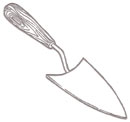
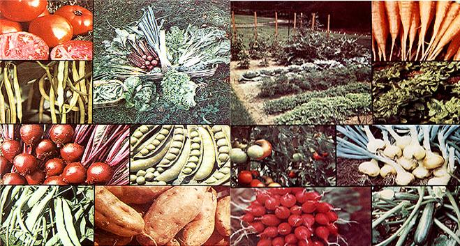

THE Mother Earth News (restricted) , Inc., P.O. Box 70, Hendersonville, N.C. 28739
In Issue No. 37, Bill Wodraska shared some of his thoughts regarding one of mankind's better ideas-barter-and offered up an interesting suggestion: "I'd like to see a continuing feature on barterand offered up an interesting feature on barter and skillandlabor exchanges," said Bill. "Maybe MOTHER could even swap subscriptions for contributions to the department." "You're on!" we replied . . . and announced our stillstanding offer: Anyone (and that means you!) who sends us a short (200 words or less) account of an actual barter that's good enough to print will receive-as the folks on the following pages have-a twelvemonth subscription (or extension of same) to THE Mother Earth News (restricted) .
As an artist and woodcarver, I've found I have a bartering commodity that seldom fails to clinch a deal.
I began to realize this 10 years ago, just before my wife and I got married. We went to see a doctor known to have covered his walls with swappedfor art. Sure enough, the doc accepted one of my ;ketches in return for the vaccinations and inoculations we needed for our Mexican honeymoon.
That first transaction dispelled my misconceptions about professionals working only for money, and trading was firmly established in my head as a respectable alternative to cash deals.
The next opportunity to barter came when we wanted a purebred Persian cat and were really taken with one expensive kitty. I heard myself saying, "How'd you like a wood carving-any subject-in exchange for the cat?" Soon the kitten breeder had his carving and we had Angel . . . a source of endless enjoyment.
Since then we've gotten new mattresses, fresh eggs and produce, a toy train for our son Corey . . . and when Corey needed stitches, we even had those done for a small sign I carved.
Need I say more? As far as I'm concerned, bartering's indeed a blessing.
Robert Wade
Virginia Beach, Va.
Since I hope to open a preschool in our area someday, I decided to take a training course at a Montessori school in a nearby city last fall. My daughter was too young to accompany me to class, but a friend who has a son about the same age as my girl-offered to watch her while I was gone. When I finally open my center, I'll teach her son for free.
I've discovered that quite a few folks around here would like for their youngsters to attend a preschool, but just can't afford that "extra" expense. Maybe I can waive some of the tuitions in trade for labor and materials used in building repairs.
Kay Ramirez
Hope, Idaho
About four years ago my wife and I left the city rat race and bought an abandoned 75-acre farm in central Texas. The fields on the tract's northern section were relatively clear and rolling, but about 29 acres in the southern portion were heavily eroded and overrun with shrubs.
The county just happened to be building a new farmtomarket road along the edge of my "badlands" and the contractor wanted to borrow water from our creekwhich was backed up by a natural rock damto use in constructing the route. Of course I agreed . . . on the condition that he'd bring some heavy rock fill from a hillside cut they were making, dump the loads into my eroded gullies, and maybe do a little shaping and brush pushing in these areas.
When I returned from Dallas three months later I couldn't believe the change in my place. The pockmarked land I'd just recently left was now gently rolling and contoured for slow runoff.
If I'd paid for this work, surely the project would have cost between $2,000 and $3,000. As it was, I received a topnotch job for only a little water . . . which was renewed each time it rained.
Bill Prince
Rochelle, Tex.
One day seven years agowhen I was divorced and unemployed with four youngsters to feedI became worried. Worried because the fish swimming below me as I stood drowning bait off a pier . . . didn't seem to know they were supposed to be our dinner that night! When my son brought down a few cookies I'd baked the night before, a friendly fisherman yelled, "Hey, Franny, got any cookies for me?" Without even thinking I shouted back, "Well, George, you got any fish for me?" We swapped . . . and I became a confirmed barterer right on the spot.
Now my family's in Iowa. Just a few weeks back a couple came into our shoe repair shop and offered five pounds of beautiful vegetables as payment for a fixup job. Of course I couldn't say no . . . but I was a little concerned over what my new husband's reaction would be. At that time he didn't say a thing. But tonight after reading four loaned copies of MOTHERhubby showed me your Successful Swaps column and said, "Look at this neat article." Then he added, "Oh, by the way, I exchanged a repair job for ten pounds of red potatoes today."
Seems it takes only one transaction to convert most folks.
Franny Hart
Nevada, Iowa
When I bought my van it had 80,000 miles on it, and an immediate overhaul seemed like good preventive medicine. However, since my new wheels had already taken all my capital, I needed a quick source of income in order to have the work done.
My area has a high unemployment rate, so a home business seemed logical. And, since it was only fair that my new beast should help pay for itself, I started a light moving and hauling business (as described in MOTHER NOS. 13 and 16).
I was starting to accumulate some dollars when I noticed something else in MOTHER: the Successful Swaps section . . . and the thought "Maybe I could do that, too!" flashed through my mind.
Somewhat nervously, I began asking garage owners if they could use my services. Sure enough! One man had a daughter who was about to enter college several hundred miles away. A long day's drive netted me an overhaul for just the price of the parts.
So now I have to thank MOTHER and her readers twice . . . once for giving me the idea for my livelihood, and again for turning me on to barter!
Brockton Sides
Anaheim, Calif.
I'm a writer by trade, andperhaps as a result of long hours at the typewriterI suffer from a painful arthritic condition in my neck.
Treatment by an expensive orthopedic surgeon and seven weeks of therapy didn't help much. Then a friend referred me to a Chinese acupuncturist of excellent reputation. After two weeks of treatment I felt great, and the benefits lasted for months.
Later, however, pressures began to mount and my neck started to hurt again. I tried to think of a way to afford more u acupuncture sessions (which aren't cheap) and must have wished powerfully, becausebefore longmy Chinese doctor telephoned to ask if I could suggest a possible publisher for a book he was writing.
Flash! I thought of MOTHER and the bartering principle she endorses . . . and offered Dr. T. my services in researching possible markets for his book, plus advice on structure, editing, etc., in return for his treatments. He was delighted.
Now my neck feels better, and the acupuncture tome is coming along just fine. Best of all, my swapping partner's going to need enough assistance to keep me in shape for a good long time . . . with no cash involved.
Lucy Beckstead
Wheat Ridge, Colo.
As a part-time beekeeper, I've often swapped honey for other goods and services. In the past I've traded the golden nectar for fresh milk and eggs . . . and have even had my garden plowed and my hay cut and baled for a little sweetener. One fella traded a welding job on my truck for a bit of beeswax.
If you've got something valuable to offer, the possibilities for barter have no limit!
Wayne Johnston
Lockport, Man.
Canada
We accept barter as a fact of life, and routinely make such exchanges as goat's milk for maple syrup, bread for babysitting, or windows for a repair job on our chain saw. However, one of our many swaps stands out from the others as highly unusual because it shows that even big business (and big government) stands to learn something from MOTHER.
I work for an electronics retailer. Our firm just recently traded some video equipment to a state university for a sizable quantity of audio tape which that institution wasn't using. On a cash basis, that deal would have amounted to several thousand dollars . . . but through barter not one penny changed hands. Andof courseboth parties thought they got the best of the deal.
Marvin Fawley
Freeville, N. Y.
Since we're vegetarians, Carl, Brian, and I took a twoweek supply of food with us on our vacation last summer. But when we arrived in Port Angeles, Washington, where we were to board the ferry for Vancouver Island, we discovered we couldn't take our fresh, organically grown produce into Canada. So there we were, five hours from departure time, with a sack of lemons, two bags of oranges, 14 pounds of carrots, and assorted other vegetables. We managed to eat most of the oranges, but what could we do with 14 pounds of carrots?
Well, MOTHER's Successful Swaps feature struck the flint for the fire. We headed for the local health food store to see if we could trade our supplies for other foods that we could get through customs. The young woman at the Country Aire General Store was sympathetic to our problem, and swapped us an equal value amount of grains and nuts for our produce. What a neat solution, and what a good deal!
We'll be moving to the country soon, and I know that out there barter will become more than an occasional occurrence, especially with the milk goats next door, and the beehives down the road . . . .
Mary Chun
Fairfax, Calif.
We've had a bartering co-op organized here in Idaho for quite a few years, and the arrangement sure beats cash exchanges. Here's how it works:
Suppose you're a doctor who needs his car painted. Instead of paying a body shop to do the work, you call any co-op member who paints automobiles . . . and get the job done absolutely free.
But perhaps the painter doesn't need any doctorin' at that time. Maybe he could use some fruit for canning or would like to have his house roofed instead. He just calls some other participant and receives those services at no charge. Eventually, someone in the group will get sick and come to you for treatment. And pretty soon you'll think of another project you'd like done . . . and so the swapping continues.
Though people of all ages, talents, and occupations can join the co-op, you do have to be very good at whatever skill you contribute, and you must be willing to work for every member who requests your help.
And that's all there is to it! If the co-op gains enough members you may be able to get everything you need through the network . . . and the services won't cost you a cent!
Angela Dailey
Meridian, Idaho
Though not a tremendous trade, this transactioninvolving materials that might otherwise have been junked-proved profitable and fun.
I make wall hangings, and one day, while browsing through a thrift shop in search of materials for my craft, I spied some empty green wine bottles with a fairly hefty price marked on them. Remembering my own stash of such containers, I decided to arrange a swap.
My simple classified ad said that I had wine bottles and gallon jugs to trade for fabric or yarn scraps, and here's what developed:
A lady responded who had just started working full time, and who no longer had time to sew. But she could find time to put up a few bottles of wine, so she took several from my collection and gave me three large sacks full of beautiful, clean remnants.
From this windfall, I made numerous gifts of clothes and stuffed toys for my grandchildren and other little ones . . . since many of the "scraps" were too big to sacrifice for patches.
I still have enough material to keep me producing quilts, hangings, or whatever for some time. Andif I should run low well, I've always got a few bottles left!
Donna Parks
Rapid City, S.D.
The cleaning, painting, and general handyman work I've been doing for my city neighbors the last two years led to a summer in the country for me, my wife, and some of our friends.
Many of my customers have summer homes that needed some fixing as the season approached. It was only natural that they should want me to help out, butafter having just gone through some major financing many of them weren't too willing to hire me for cash.
My wife was on her summer vacation from school, however, so the two of us, along with some friends, undertook a threeday painting job in exchange for six days of pure enjoyment at a beach house.
Word of mouth travels fast (especially where no money is involved), and we found that one job led to another, week after week.
We all experienced one of our best summers ever . . . for absolutely no cost except a minimum of pleasurable, companionable labor.
John McCabe
Brooklyn, N.Y.
When we made our move to the Ozarks from Arizona, we had so many possessions to transport that no selfrespecting homesteader could do without (two horses, a tractor, a Datsun pickup, and a car, plus furniture and innumerable boxes of canned foods and household goods) that we finally bought ourselves a moving van to carry the loads.
And I do mean loads. We actually made three round trips1,400 miles each wayin that van. The journeys to Arkansas, burdened with our own essentials, were fine . . . we knew we were saving many dollars that a professional moving company would have charged us. But each return to Phoenix with a big, empty truck seemed unbearably expensive. So we ran an ad in the paper, describing ourselves as owners of a private transport rig and stating our destination.
As a result, each of our trips back to Phoenix was paid for . . . by barter. We acquired a rototiller, a shredder, a chain saw, a riding lawn mower, and a bush hog for our pastures, and each of our trading friends saved money by having us haul their load to Phoenix.
P.S. We then sold our invaluable van for the price we'd paid for it.
Lois Mathers
Mammoth Spring, Ark.
Last summer, while living in the country, my husband and I made a fruitful acquaintance with our neighbor, an elderly man who had recently lost his driver's license.
In exchange for frequent twomile rides to town, this kind fellow let us dig bushels of potatoes, onions, and beets from his huge garden, and we also got to pick peas, tomatoes, and lettuce.
We wouldn't have missed knowing this man for anything. In addition to the delicious produce he shared with us, he gave us lots of good gardening advice.
Looking back on the swap, we don't doubt that we gained much more than we gave.
Sylvia & Sam Henry
Greenville, N.C.
Here on our Aleutian Island paradise, the lower 48 seem like a distant planet. With only one department store and one grocery serving our diverse population of 5,000, we islanders swap and barter quite a bit among ourselves.
For instance, it's next to impossible to buy auto parts on-island. So, when a ball joint went bad on my VW, I started looking for a trade. As it turned out, my friend Sam knew a guy who had VW parts to spare. And, since Sam needed some gravel spread in his backyard, I spent the following Saturday strewing stone while he picked up the good ball joint and installed it for me.
I made another good exchange just last week. My old boss gave me about 10 pounds of trout for helping him put his boat in the water. I fried some of the fish, but wanted to smoke the rest. Problem was: I didn't have a smoker. When I mentioned the difficulty at work, one of the fell as volunteered to do the job for me if he could keep half the meat. So today I've got plenty of smoked fish, and we're all pleased.
It's a nice way to live.
Andy Lacher
FPO Seattle, Wash.
I and the other women in my town-house development have quite a good swapping system going with our children's clothing.
As we have youngsters of all ages, there's always one of appropriate size for any hand medown that might become available.
When an article is passed on, the donor always makes sure it's clean, mended, and pressed. My two-year-olds outfits go to the two new babies on the street, while the outgrown duds of someone else's four-year-old come to our house, along with the sweaters and good pants my eight-year-old receives from the eleven-year-old next door.
In this northern climate, it's especially nice not having to buy our growing offspring new coats and boots every season.
Actually, we don't limit our trading to children's wear. The nursery equipment my youngest no longer needed went to a friend's newborn, and we also swap baby-sitting. Furthermore, as most of us sew, we exchange patterns and various dress making skills.
Who says bartering is forgotten in the city?
Nona McCreedy
Edmonton, Alta.
Canada
I'm a single woman, trying hard to save money for my big break to the country. I work the night shift in a heavily automated factory which has lax supervision, so that we operators have plenty of free time.
Since I'm always trying to kill two birds with one stone, I read periodicals like MOTHER on the job. If I come across any information that might help my fellow workers, I pass it along. In return, I've had an electric light fixed, a table and some chairs hauled, and my lawn mower repaired.
When I see a good recipe, I try it out and share the product with various married women I work with. As likely as not, they'll thank me by inviting me home for a free meal.
Also, as a former hairdresser, I give free haircuts on my lunch hour in exchange for future favors.
This kind of co-worker give-and-take works out to everyone's advantage. (But I wouldn't want our employers to know about my little "learn as you earn" program, all the same!)
J. Lockwood
St. Marys, Pa.
When my husband was in the service we moved around a lot, and sometimes it took a while to meet new friends.
In one apartment building we temporarily inhabited, the laundry room had a table that was used for sorting and folding clothes. One day I put several magazines, paperback books, and product samples on the table with a little sign saying, "I can't use these anymore. Help yourself."
Well, I really started something. Soon my neighbors were adding clothing and a variety of other items to the laundry room repository. Even cakes, cookies, and bread were placed there for the sharing, and one time someone going away for the weekend left half a watermelon!
Since there was a lot of moving in and out among military families in the building, newly transferred folks began to leave perishable foods and other things they couldn't take along on the little table.
When we were transferred, we had a place to leave things that we couldn't take with us but which were too good to discard. And we also left many new friends thatif it weren't for the "community table"we might never have gotten to know.
Sue Piedalue
Perma, Mont.
When you've been raised in a farm community, the idea of bartering is nothing new. People in these parts have always exchanged goods and services, thanks to a closeness among them that's missing in too many places these days.
This year we found the swap system to be especially invaluable when we started to build a house. We got our woodshed for a used wheelbarrow and some rafters, and a new block chimney cost only a day's work transporting firewood.
Our truck has been important in several trades, like the time we brought home over 150 tires iii exchange for hauling the lot of them away. Though well worn, these automotive castoffs have found their way onto hay wagons and farm trucks throughout the area. We can also count on having plenty of retreads for worn shoe soles, and maybe even a new roof (as shown in MOTHER N0. 41). Then we had a chance to bring home a turndown chimney. We'll soon have a pad of 100-year-old bricks beneath our stove, and plenty of fill for the driveway.
The vigorous interchange that goes on around here is really viewed as sharing. After all, isn't that what swapping's all about?
Bob & Robin Fillhart
Adams, N.Y.
The first time I tried "barterin" I was flat broke and working in the date palm groves of the California desert. I sure wasn't hurting for foodI had all I could eat of the finest organic dates, pecans, pink grapefruits, tangerines, etc. (it was a raw food eater's paradise!)but I still got kind of hungry for a little variety in my daily meals.
Wouldn't you know that every dinnertime the Mexican workers sizzled up some kind of mouthwatering, appetite-stirring meal? Of course they offered to share their food, but since they were even poorer than I was I maintained my raw regimen.
Then one evening, while taking a sunset stroll, I discovered a nearby tomato farm. The following nightfall, I presented myself to the owner with a big sack full of surplus dates, nuts, and assorted citrus fruits . . . and came wobbling away with a couple of crates full of fat reds.
I could never have eaten all them 'maters alone, and when the Mexicans saw my juicy beauties their eyes lit up. They gladly swapped enough tortillas, eggs, cheese, onions, and other fixin's to provide me with many of those savory, south-of-the-border meals I'd been acravin'.
Robert Harris
Kilchberg, Switzerland
Every year we receive a bountiful harvest from our walnut and fruit orchard, and some of it we sell to stores and whoever, but we really prefer to barter our homegrown goodies.
We've traded walnuts for such diverse things as pottery, blueberries, and quartz crystal, and friends of ours have exchanged their nuts for a sit in the dentist's chair!
Our apples and cherries have brought us a multitude of valuable goods . . . even yummy meals in natural food restaurants.
But our first real experience with big bartering came at the end of last summer, when we held the "Barter Bazaar" on our farm. We sent out flyers in advance, and people came from miles around to set up their booths and trade ducks, geese, chickens, pottery, clothing, jewelry, vitamins, herbs . . . just about anything you can imagine. It went on for two days, with a potluck meal the first evening. The whole thing was great, and the bazaar was a hit.
If anyone's interested in similar future gatherings (we are!), do write us.
David Richards
Moon-Star Farm
Rt. 3, Box 410
Newberg, Ore. 97132
It's been seven years since we settled here in the coastal mountains of central California, and the swapping began the day we moved in. The previous owners couldn't get their freezer up the narrow staircase from the basement, so we traded our new, frostfree upright for their old, frosty sarcophagus. But they did throw in a dog, some chickens, and a couple of rabbits.
Having started out with animals on our first day like that, we soon expanded our homestead to include pigs, cattle, and a goat . . . and these led to even more swapping. The goat was exchanged for more porkers, and we traded other things we had for skills we hadn't acquired (such as castrating piglets), and livestock we wanted (such as turkeys). Last summer we swapped a steer to get some antique plumbing replaced, and in return for some welding we're getting done this winter we plan to help the welder fence his land next spring.
A lot of trading in our part of the country is just plain old neighborliness. We can depend on people, whether for a cup of sugar or a push out of the mud, and they know they can count on us in return.
Toni Sigrist
San Juan Bautista, Calif.
|
 |
 |
|